（十二） 搜索：递归、回溯、DFS、BFS 与记忆化
当一次局部选择不能保证结果时，就记录当前状态并继续尝试不同分支。先沿调用进入与返回，再加入撤销、访问标记、队列和缓存。
1. 递归：把当前任务拆成更小的任务
递归是一种 函数直接或间接调用自身 的方法，本质是：
用同一个问题的更小规模版本，来解决当前问题
递归一定要满足三点：
- 递归定义（递归关系）
- 递归到哪里直接返回
- 每次缩小问题，直到得到直接结果
若递归不能到达终止条件，就会不断增加调用栈，最终可能栈溢出。
以经典的斐波那契数列为例
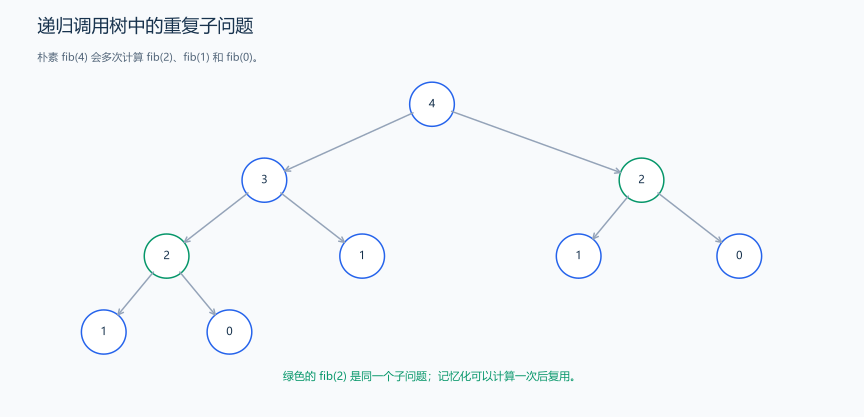
节点中的数表示参数 n，而不是返回值。相同参数的调用反复出现，说明有重复计算。
// 递归终点为 0、1；重复子问题很多，本例只用于小 n 的递归演示。
int fib(int n) {
if (n <= 1)
return n;
return fib(n - 1) + fib(n - 2);
}它先递归求出更小的子问题，再利用返回值计算当前项。这个朴素版本重复计算很多，时间为指数级，递归栈深度为 \(O(n)\)；仅用于理解递归。示例要求 0 ≤ n ≤ 20。
1.1 汉诺塔问题
题目原文（自拟）： 有 A、B、C 三根柱子和 1 <= n <= 16 个大小不同的盘子。初始时盘子都在 A 上，小盘在上、大盘在下。每次只能移动某根柱子最上面的一个盘子，大盘不能放在小盘上。把全部盘子移到 C，B 可作辅助；按顺序输出每次移动，每行格式为 起点 -> 终点。
思路分析： 要移动最大的盘子，先把压在它上面的 n-1 个盘子全部移到 B；然后把最大盘从 A 移到 C；最后把 B 上的 n-1 个盘子移到 C。两次“小塔搬运”遵守同样的规则，所以可以递归调用。
hanoi(n, from, aux, to) 的参数分别表示盘子数、起点、辅助点、终点。第一次递归要把辅助点当终点，原终点当辅助点；第二次递归再把原辅助点当起点。参数位置是在描述本次任务，不是永远固定的柱子角色。
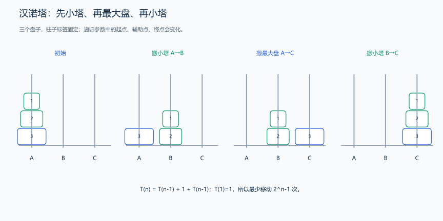
图以三个盘子为例：先搬上方两个盘子，再搬最大盘，最后搬回小塔。绿色步骤本身也由相同的递归规则完成。
代码示例：
#include <bits/stdc++.h>
using namespace std;
void hanoi(int n, char from, char aux, char to) {
if (n <= 0)
return;
// 递归终止条件：只有一个盘子时直接移动
if (n == 1) {
cout << from << " -> " << to << endl;
return;
}
// 步骤1：将上方n-1个盘子从from移动到aux（以to为辅助）
hanoi(n - 1, from, to, aux);
// 步骤2：将最大的盘子从from移动到to
cout << from << " -> " << to << endl;
// 步骤3：将n-1个盘子从aux移动到to（以from为辅助）
hanoi(n - 1, aux, from, to);
}
int main() {
int n;
cin >> n;
// 调用汉诺塔函数
hanoi(n, 'A', 'B', 'C');
}样例与解释： 输入 3，输出如下。可以边读边画三根柱子，检查每一步移动的都是顶端盘子。
A -> C
A -> B
C -> B
A -> C
B -> A
B -> C
A -> C复杂度分析： 移动次数满足 \(H(n)=2H(n-1)+1\)、\(H(1)=1\)，因此 \(H(n)=2^n-1\)，时间为 \(O(2^n)\)。移动最大盘前后都至少需要完成一次小塔搬运，递归方案恰好达到这个下界。最大调用深度为 n，额外栈空间为 \(O(n)\)；总调用次数与栈深度是两个量。
扩展阅读： 可以用显式栈模拟这三步，也可以利用二进制计数规律生成移动序列：第 i 步移动的盘子编号等于 i 的最低有效 1 位的位置再加一。格雷码相邻编码只改变一位，也能帮助观察“一次只动一个盘子”的结构。限制移动方向或增加柱子后，需要重新设计递推，不能继续沿用三柱的步数公式。四柱版本的最优步数问题已有证明，不能把所有多柱版本都称为未解决；参见 Grosu 的论文。
练习题： 洛谷 P1242 — 新汉诺塔（进阶：初始与目标状态任意，需要扩展递归划分）。
2. 回溯：选择、递归与撤销
回溯用深度优先的顺序枚举选择。每层先作出一个决定，再进入下一层；遇到死路或处理完一个答案，就返回上一层，恢复这次选择改动的共享状态，然后尝试其他决定。
理解回溯时，要分清三个动作：返回改变当前执行的是哪一层函数；撤销恢复数组、集合或路径等共享数据；继续枚举尝试该层的下一个选择。函数返回不会自动撤销对共享数组的修改。
- 定义搜索状态，说明这一层已经决定了什么，还要决定什么。
- 列出全部合法选择，并明确怎样判断冲突和完成。
- 对每个选择依次执行“记录选择 → 递归 → 撤销选择”，使下一分支从相同的初始状态出发。
按值传递的局部变量有各自的副本，通常无需手动撤销；共享容器里的 push_back、占用标记等修改则需配对恢复。
2.1 n 皇后问题
题目原文（自拟）： 输入 1 <= n <= 15，在 n×n 棋盘上放置 n 个皇后，使任意两个皇后不在同一行、同一列或同一条对角线上。输出合法放置方案数。棋盘的旋转或镜像若位置不同，按不同方案计数。
思路分析： 一组方案在每行各放一个皇后，所以状态 dfs(row) 表示前 row 行已经合法放好，正在决定第 row 行的列。尝试各列，冲突就跳过；合法则标记列和对角线，进入下一行。递归返回后撤销这三个标记，恢复进入该分支前的状态。
主对角线上相邻格的行、列同时加一，因此 row-col 不变；副对角线上一个加一、另一个减一，因此 row+col 不变。两者分别用 row-col+n-1 和 row+col 作数组下标，范围都是 0…2n-2。
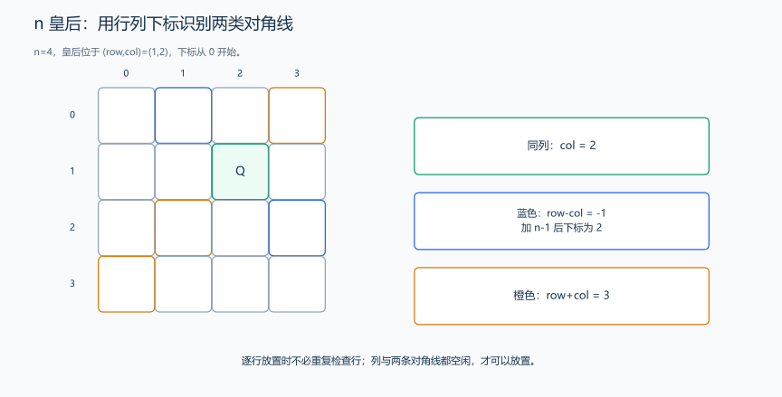
图中位置 (1,2) 的主对角线编号为 1-2+3=2，副对角线编号为 1+2=3；同色格子共享一个编号。
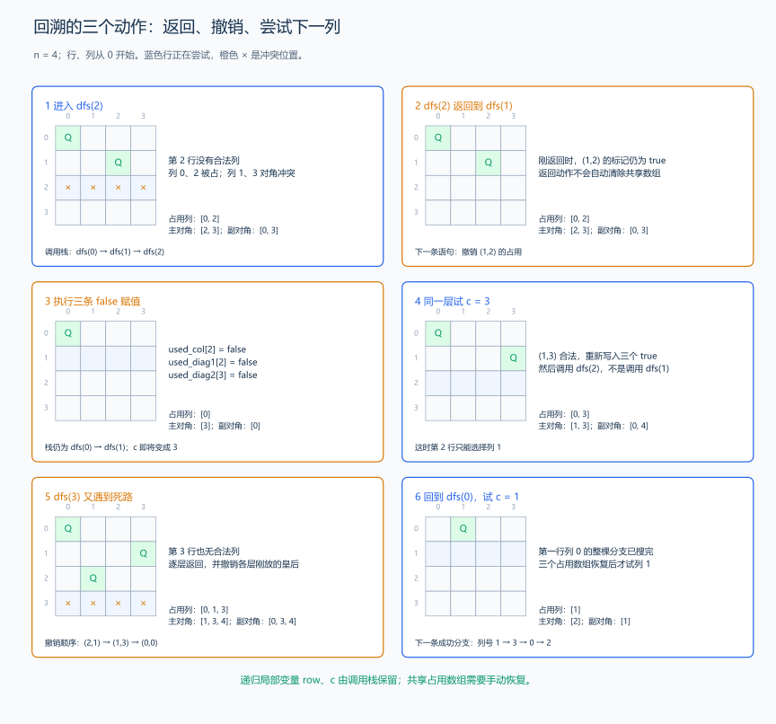
按列号从小到大尝试 n=4。放在 (0,0)、(1,2) 后，第 2 行四个位置都冲突，dfs(2) 返回到调用它的 dfs(1)。此时 (1,2) 还在棋盘上：把 used_col[2]、used_diag1[2]、used_diag2[3] 写回 false，就恢复了放置 (1,2) 之前的占用状态。随后 dfs(1) 的循环把 c 从 2 增为 3，尝试 (1,3)。
图中第 5 步又出现死路。此时先返回并撤销 (2,1)；该层没有别的合法列，再返回并撤销 (1,3)；第一列的整个分支都搜完后，才撤销 (0,0)，回到第 0 行尝试列 1。每层的 row、c 保存在各自的调用栈里，所以能记住“返回后该继续哪个循环”。
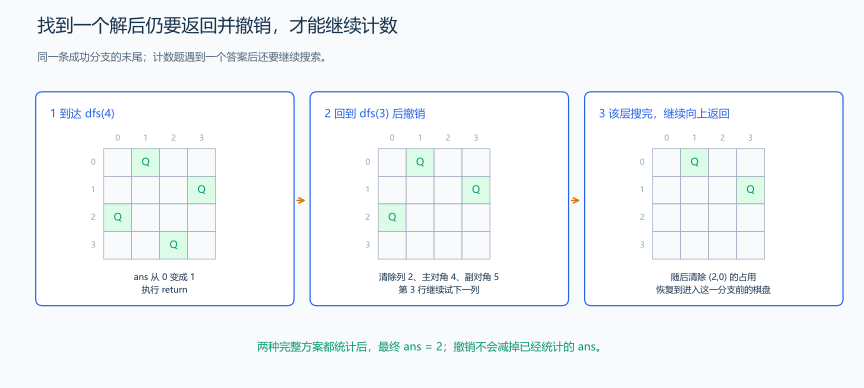
沿列号 [1,3,0,2] 到达 dfs(4)，先让 ans 加一，然后返回。返回后仍需撤销第 3 行的皇后，并继续尝试余下位置，才能统计全部方案。ans 记录已经找到的答案，不随棋盘撤销而减少。
col[row] 只记录当前选择，不参与冲突检查；有效部分是已经放好的前 row 行。撤销时清除三个占用数组即可，旧的 col[row] 会在下一次合法选择时被覆盖。若用一个动态数组保存当前路径，则要在递归前 push_back，返回后 pop_back。
代码示例：
#include <bits/stdc++.h>
using namespace std;
int n; // 棋盘大小，皇后数量
int col[20]; // col[row] = 第row行皇后所在的列（0-based）
bool used_col[20]; // used_col[c] = 第c列是否已被占用
bool used_diag1[40]; // used_diag1[d] = 主对角线d是否已被占用
bool used_diag2[40]; // used_diag2[d] = 副对角线d是否已被占用
long long ans = 0; // 合法解的数量
void dfs(int row) {
// 终止条件：已成功放置n个皇后
if (row == n) {
ans++; // 找到一个合法解
return;
}
// 遍历当前行的所有列
for (int c = 0; c < n; c++) {
// 检查列冲突
if (used_col[c])
continue;
// 检查主对角线冲突
int diag1_index = row - c + (n - 1); // 加(n-1)确保索引非负
if (used_diag1[diag1_index])
continue;
// 检查副对角线冲突
int diag2_index = row + c;
if (used_diag2[diag2_index])
continue;
// 当前位置合法，放置皇后
col[row] = c; // 记录第row行皇后放在第c列
// 标记占用状态
used_col[c] = true;
used_diag1[diag1_index] = true;
used_diag2[diag2_index] = true;
// 递归放置下一行的皇后
dfs(row + 1);
// 回溯：撤销选择，恢复状态
used_col[c] = false;
used_diag1[diag1_index] = false;
used_diag2[diag2_index] = false;
}
}
int main() {
// 输入棋盘大小
cin >> n;
if (n < 1 || n > 15)
return 0; // 教学示例的范围，搜索量增长很快
// 开始回溯搜索
dfs(0);
// 输出结果
cout << ans << endl;
}样例与解释： 输入 4 输出 2，两种方案各行的列号分别是 [1,3,0,2] 和 [2,0,3,1]。输入 1 输出 1；2、3 都输出 0。
复杂度分析： 空间为 \(O(n)\)，包括列标记、两种对角线标记和递归栈。本实现每个状态仍扫描 n 列，按不重复列的排列树给出保守时间上界 \(O(n\cdot n!)\)；对角线剪枝会减少实际访问状态。实际分支数可从图中的冲突跳过过程观察。
扩展： 到达 row==n 时，col 已是一组完整方案，可以输出它，输出成本另计。位掩码可以批量表示列与对角线占用，并用 available & -available 依次取可选位，应使用足够宽的无符号类型；这种方法改善常数。利用镜像对称性时，左半首列的方案乘二，奇数棋盘的中央列需要单独处理。启发式局部搜索可以尝试寻找大棋盘上的一个解，但与完整计数是不同任务。
n |
1 | 2 | 3 | 4 | 5 | 6 | 7 | 8 |
|---|---|---|---|---|---|---|---|---|
| 方案数 | 1 | 0 | 0 | 2 | 10 | 4 | 40 | 92 |
n |
9 | 10 | 11 | 12 | 13 | 14 | 15 | 16 |
|---|---|---|---|---|---|---|---|---|
| 方案数 | 352 | 724 | 2680 | 14200 | 73712 | 365596 | 2279184 | 14772512 |
较大规模的计数仅供对照；教学代码限制 n<=15，实际运行时间还取决于剪枝与实现。
练习题： 洛谷 P1219 — 八皇后、洛谷 P1036 — 选数。
3. 深度优先搜索（DFS）
DFS 沿一条路径尽量深入，再返回尝试其他方向。树的前序遍历和前面的回溯都可以用 DFS 描述；图中还需要标记访问状态，避免沿环重复搜索。
题目原文（自拟示例）： 给定一个无向图，顶点编号为 0 到 n-1，以及起点 start。返回从 start 能到达的顶点访问顺序。按邻接表中存储的顺序探索邻居，每个顶点只访问一次。要求 n >= 1，输入顶点编号合法。
思路分析： 访问顶点后立即标记，再递归访问未访问的邻居。提前标记能阻止通过反向边或环再次进入同一顶点。
访问标记维护什么？ visited[u]=true 表示这个顶点已经被搜索进入过，后续不再从另一条边重复进入。无向边既存 u→v 又存 v→u，若进入 u 后不立即标记，递归到 v 时就可能又回到 u，永远绕圈。
对边 (0,1)、(0,2)、(1,3)，先进入 0，沿第一个邻居进入 1；1 的邻居 0 已访问，跳过，再进入 3；3 没有新邻居，返回 1，再返回 0，最后进入 2，得到 0、1、3、2。返回并不撤销这里的标记，因为目标是让每个顶点只访问一次；这与需要枚举多条路径的回溯题不同。
每个顶点只展开一次，每条邻接表记录只检查一次，因此总量是顶点数加边数。这个访问顺序只是由当前邻接表顺序决定的一种结果，不代表从起点到各顶点的最短路。
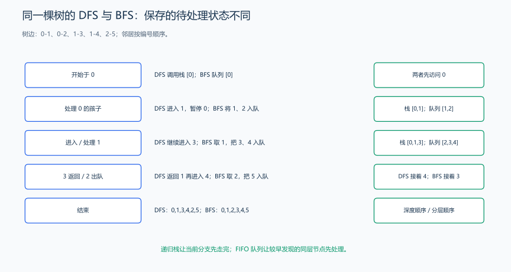
对照图使用 6 个顶点、边 0-1、0-2、1-3、1-4、2-5，逐步比较 DFS 的调用栈与 BFS 的待处理队列。下面函数的调用样例使用 4 个顶点的图，仍按同一个规则执行，输出见样例。
#include <functional>
#include <vector>
using namespace std;
vector<int> dfsOrder(const vector<vector<int>> &graph, int start) {
vector<bool> visited(graph.size(), false);
vector<int> order;
function<void(int)> dfs = [&](int u) {
// 进入时就标记，防止通过环或反向边重复递归。
visited[u] = true;
order.push_back(u);
for (int v : graph[u]) {
if (!visited[v]) {
dfs(v);
}
}
};
dfs(start);
return order;
}样例： 无向边为 (0,1)、(0,2)、(1,3)，邻接表按编号递增存储，从 0 出发的顺序为 0 1 3 2。
代码解释： visited 表示是否已经进入该顶点，order 保存访问顺序。这个函数只搜索起点所在的连通块；搜索整张图时，还需枚举所有未访问的顶点作为新起点。
时间 \(O(V+E)\)，额外空间 \(O(V)\)。很深的图可能使递归栈溢出，此时可以改用显式栈。
练习题： 洛谷 P1605 — 迷宫、洛谷 P5318 — 查找文献。
3.1 完整例题：迷宫终点的可达性
题目原文（自拟）： 给定 n×m 的迷宫，1<=n,m<=30。每个格子为 .（可走）或 #（障碍）。从左上角 (0,0) 出发，每步可以向上、下、左、右移动一格，不能越界或进入障碍。判断能否到达右下角 (n-1,m-1)。第一行输入 n m，随后输入 n 行、每行 m 个字符；可到达输出 YES，否则输出 NO，起点或终点被封住时输出 NO。
把迷宫转成图： 每个可走格子是一个顶点，相邻可走格子之间存在无向边。无需真的列出全部边，用四个方向随时计算邻居即可，这叫隐式建图。状态是当前格子 (r,c)，合法判断依次是“未越界、不是障碍、没有访问过”。
为什么不撤销 visited？ 本题只问能否到达。某个格子已展开过，它所有方向的后续可达性就已被检查；从另一条路径再到同一格不会产生新的出口。若题目改成统计不能重复经过格子的所有路径，状态还依赖当前路径中的占用情况，需要回溯撤销标记，不能照搬本程序。
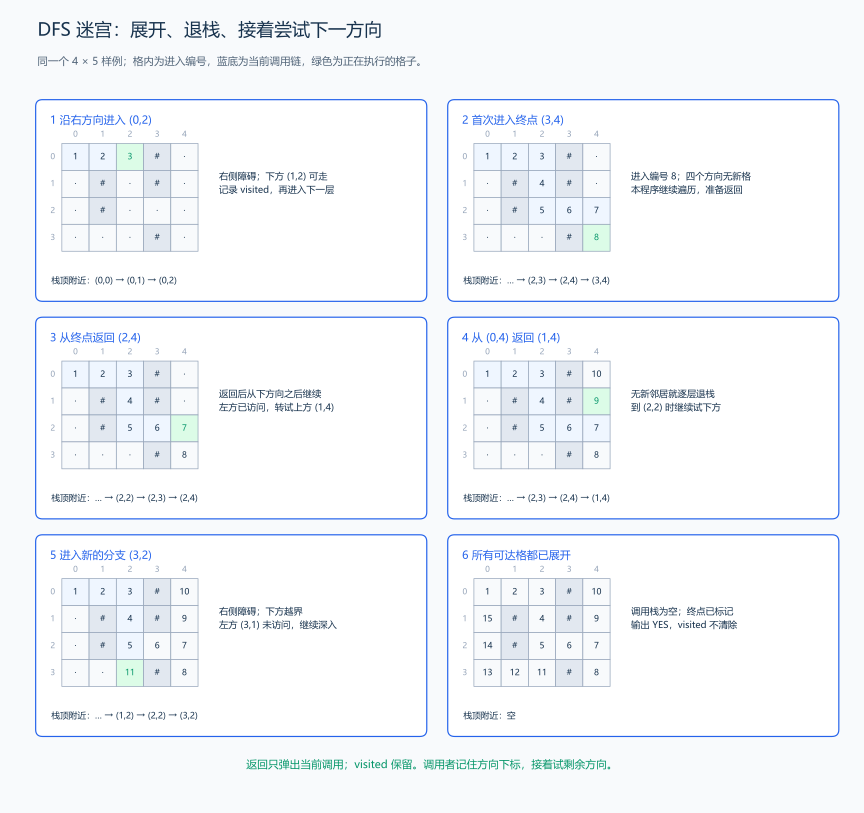
图中的浅蓝格是当前尚未返回的调用链，编号是第一次进入格子的次序，两者不能混淆。从 (0,2) 向右遇墙，转向下；进入第 8 个格子 (3,4) 后，四个方向都没有新邻居，只能返回 (2,4)。父调用不会从第一个方向重做，而是接着检查后面的方向，随后向上进入 (1,4)、(0,4)。上方分支返回完，再退到 (2,2)，向下进入第 11 个格子 (3,2)，继续探索左侧通路。
| 阶段 | 调用怎样移动 | 哪些状态变化 |
|---|---|---|
| 深入 | 父调用暂停，合法邻居产生新调用 | 新格子设为已访问；调用链增长 |
| 无新邻居 | 当前循环结束，函数返回父调用 | 调用链缩短；已访问标记保留 |
| 换方向 | 父调用从刚才调用语句后继续 | 试下一个邻居，跳过墙、越界与已访问 |
| 搜索完成 | 起点的所有方向都处理完并返回 | 调用链为空，所有可达格子的标记仍在 |
本程序没有“到终点立即结束”的语句，因此找到终点后仍会搜索全部可达格子。最后检查终点是否被标记。调用返回是一种回退，但这里没有撤销 visited；若要求枚举所有简单路径，才需要把占用标记恢复，允许另一条路径重新进入。
#include <functional>
#include <iostream>
#include <string>
#include <vector>
using namespace std;
int main() {
int n, m;
cin >> n >> m;
vector<string> grid(n);
for (string &row : grid) cin >> row;
vector<vector<bool>> visited(n, vector<bool>(m, false));
const int dr[4] = {0, 1, 0, -1}, dc[4] = {1, 0, -1, 0};
function<void(int, int)> dfs = [&](int r, int c) {
visited[r][c] = true; // 进入时标记，本题不用撤销。
for (int d = 0; d < 4; ++d) {
int nr = r + dr[d], nc = c + dc[d];
if (nr < 0 || nr >= n || nc < 0 || nc >= m) continue;
if (grid[nr][nc] == '#' || visited[nr][nc]) continue;
dfs(nr, nc); // 先走完这一方向，再返回尝试下一个。
}
};
if (grid[0][0] != '#') dfs(0, 0);
cout << (visited[n - 1][m - 1] ? "YES" : "NO") << '\n';
}输入：
4 5
...#.
.#.#.
.#...
...#.输出：
YES样例推导： 前 8 次进入构成路径 (0,0)→(0,1)→(0,2)→(1,2)→(2,2)→(2,3)→(2,4)→(3,4)，因此输出 YES。随后按图中的返回与换方向继续访问，共有 15 个可达格子。编号表示先访问了哪一格。DFS 沿一个方向深入，找到终点就说明存在路径；后面的 BFS 按移动步数分层，进一步计算最少要走多少步。
代码与复杂度： dr、dc 分别是行列增量。先检查边界再下标访问，避免越界。每个格子只进入一次并检查四个方向，时间和额外空间为 \(O(nm)\)；递归深度最坏也为 \(O(nm)\)，规模很大时使用显式栈。
练习题： 洛谷 P1605 — 迷宫（统计路径，需撤销当前路径标记）、洛谷 P1451 — 求细胞数量（枚举各连通块起点）。
4. 广度优先搜索（BFS）
BFS 按与起点的边数距离逐层扩展，使用队列保存待处理顶点。
题目原文（自拟示例）： 给定一个无权图和起点 start，计算起点到每个顶点的最少边数。顶点编号为 0 到 n-1，n >= 1；无法到达的顶点返回 -1。
思路分析： 起点距离为 0，从距离为 d 的顶点首次发现其邻居时，邻居距离为 d+1。入队时标记，避免同一个顶点反复入队。
为什么第一次发现就能确定最少边数？ 起点先入队，距离为 0。处理距离为 d 的顶点时，只会产生距离为 d+1 的新顶点，并放到队尾；队列会先处理先前的较短层，所以不会先用更长路径抢先发现某点。按层归纳，首次发现的距离就是最少边数。
仍用前面的无向图，处理起点 0 后，队列为 [1,2]，两者距离都为 1；处理 1 后发现 3，队列为 [2,3]，3 的距离为 2。直到 2 处理完，才处理更远一层的 3。
发现新邻居时先写入距离，再把它入队；另一个顶点后来遇到这个邻居，读到已有距离，就跳过它。这里 -1 兼作未发现标记，合法距离从 0 开始，含义不会混淆。这里每移动一格就增加一步，因此层数正好是路径长度；图论章节会把“经过多少条边”与“累加多少费用”分别展开。
#include <queue>
#include <vector>
using namespace std;
vector<int> bfsDistance(const vector<vector<int>> &graph, int start) {
vector<int> distance(graph.size(), -1);
queue<int> pending;
distance[start] = 0;
pending.push(start);
while (!pending.empty()) {
int u = pending.front();
pending.pop();
for (int v : graph[u]) {
// 第一次发现就记录距离并入队；之后不再重复入队。
if (distance[v] == -1) {
distance[v] = distance[u] + 1;
pending.push(v);
}
}
}
return distance;
}对照图仍用前面的 6 点树，说明两种待处理结构怎样改变。下面 4 点样例中，处理 0 后队列为 [1,2]，处理 1 后为 [2,3]，队首是 2，所以先处理 2，随后才轮到 3。
样例： 使用上面的四个顶点和三条无向边，从 0 出发，距离为 [0, 1, 1, 2]。
代码解释： distance == -1 同时表示“尚未发现”；首次入队时立即记录距离。队列保证较小距离的顶点先处理，因此首次到达就是最短路径。
时间 \(O(V+E)\)，额外空间 \(O(V)\)。普通 BFS 适用于无权图或每条边代价相同的图；一般非负边权最短路需要 Dijkstra 等算法。
练习题： 洛谷 P1162 — 填涂颜色、洛谷 P1141 — 01迷宫（连通块预处理）。
4.1 完整例题：迷宫最少步数
题目原文（自拟）： 给定 n×m 的迷宫，1<=n,m<=500。字符与移动规则同上：. 可走，# 不可走，只能向上下左右移动，每次移动代价为一步。从左上角到右下角最少需要几步？第一行输入 n m，随后输入 n 行迷宫；输出最少步数，不可达时输出 -1。起点等于终点且可走时答案为 0。
状态与推导： dist[r][c] 表示起点到该格的最少步数，-1 表示尚未发现。起点为第 0 层，处理第 d 层时发现的未访问邻居属于第 d+1 层。队列把所有第 d 层顶点排在新加入的第 d+1 层之前，因此第一次发现的路径不可能比另一条尚未处理的路径更长。
图中的 · 表示尚未发现，并不表示距离 0。每一幅同时记录刚出队的格子、这一轮新发现的格子、写入距离后的队列。处理 (0,0) 后，队列为 [(0,1),(1,0)]；处理 (0,1) 后，新增 (0,2) 从队尾加入，排在原有 (1,0) 后面，所以距离 1 的格子会先于距离 2 的格子处理。
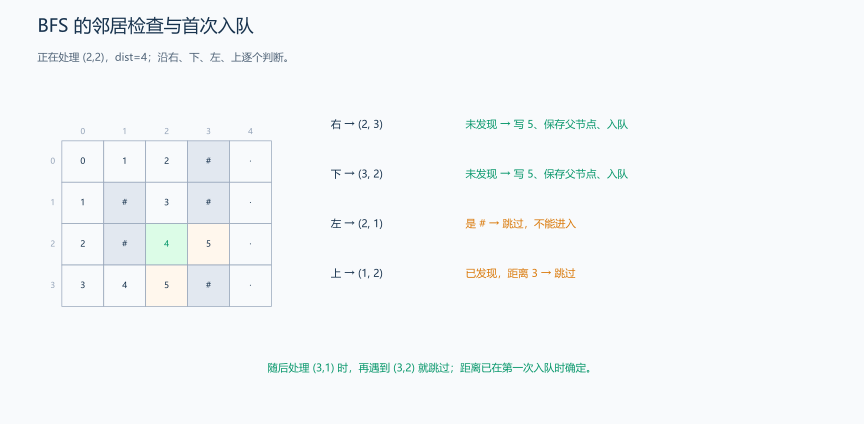
从距离 4 的 (2,2) 扩展：右侧 (2,3)、下侧 (3,2) 尚未发现，都写距离 5、父节点 (2,2) 并入队；左侧是墙，跳过；上侧 (1,2) 距离已为 3，跳过。轮到另一条路线从 (3,1) 看见 (3,2) 时，它已在队列里，不能重复加入。到 (2,4) 出队时，发现终点的距离为 6+1=7。
为什么首次发现就能定最短？ 队列先处理距离 0，再处理距离 1，依此类推。若第一次到 v 的路线长 d+1，却存在更短路线，那么那条短路线的前驱距离至多为 d-1，理应更早出队并发现 v，与“第一次现在才发现”矛盾。这个理由依赖每次移动代价相同；不能照搬到一般带权图。
#include <iostream>
#include <queue>
#include <string>
#include <utility>
#include <vector>
using namespace std;
int main() {
int n, m;
cin >> n >> m;
vector<string> grid(n);
for (string &row : grid) cin >> row;
vector<vector<int>> dist(n, vector<int>(m, -1));
vector<vector<pair<int, int>>> parent(n, vector<pair<int, int>>(m, {-1, -1}));
// parent 保存首次发现来源；起点保留 (-1,-1)，用于结束路径回溯。
queue<pair<int, int>> q;
if (grid[0][0] != '#') {
dist[0][0] = 0; // 距离在入队时确定，同时用作访问标记。
q.push({0, 0});
}
const int dr[4] = {0, 1, 0, -1}, dc[4] = {1, 0, -1, 0};
while (!q.empty()) {
auto [r, c] = q.front();
q.pop();
for (int d = 0; d < 4; ++d) {
int nr = r + dr[d], nc = c + dc[d];
if (nr < 0 || nr >= n || nc < 0 || nc >= m) continue;
if (grid[nr][nc] == '#' || dist[nr][nc] != -1) continue;
dist[nr][nc] = dist[r][c] + 1; // 本题每条边的代价都是一步。
parent[nr][nc] = {r, c}; // 与首次发现同时记录，之后不覆盖。
q.push({nr, nc});
}
}
cout << dist[n - 1][m - 1] << '\n'; // 未发现的终点仍为 -1。
}输入：
4 5
...#.
.#.#.
.#...
...#.输出：
7样例解释： 上一例中的路径经过 8 个格子，即 7 次移动，距离不是格子数。图中的每个数字都是该格的最少步数；较远格子可以有多条路径到达，但只需第一次入队。
如何恢复路径？ 上面的程序已在首次发现时保存 parent[nr][nc]=(r,c)。父节点的距离恰好少 1，因此不断指回去会依次经过第 6、5、…、0 层，而不会形成环。不可达时不要回溯；父指针只记录发现来源，不能当成迷宫中的全部边。
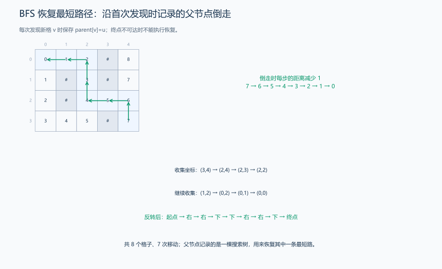
样例先收集 (3,4)→(2,4)→(2,3)→(2,2)→(1,2)→(0,2)→(0,1)→(0,0)，共 8 个格子；每一步都读取刚才所在格子的 parent，并更新当前坐标。最后反转才是正向路径，移动数为 8-1=7。队列出队顺序包含多个分支，不能直接拿它当成一条路径。
下面是可选的恢复函数；若与完整程序组合，把函数放在 main 前，补上 <algorithm>，BFS 结束后调用 restoreMazePath(parent, dist)。本题只要求输出距离，所以 main 的输出不变。函数约定两张表形状相同，且 parent 来自上面的 BFS。
#include <algorithm>
#include <utility>
#include <vector>
using namespace std;
vector<pair<int, int>> restoreMazePath(
const vector<vector<pair<int, int>>> &parent, const vector<vector<int>> &dist) {
if (dist.empty() || dist[0].empty() || dist.back().back() == -1) {
return {}; // 终点不可达，返回空路径，不能读取它的父节点继续走。
}
int r = static_cast<int>(dist.size()) - 1;
int c = static_cast<int>(dist[0].size()) - 1;
vector<pair<int, int>> path;
while (r != -1) {
path.push_back({r, c}); // 先记录当前格子，沿前驱回到起点后也记录起点。
auto previous = parent[r][c];
r = previous.first;
c = previous.second; // 用保存的前驱同时更新坐标，避免读错位置。
}
reverse(path.begin(), path.end()); // 收集顺序是终点到起点，反转成正向。
return path;
}恢复只沿一条父链，用时、结果空间均为 \(O(L)\)，L 是路径格子数；单格迷宫返回只含起点的路径，步数为 0。
代码解释： 访问标记在入队时写入，防止同层多个格子反复把同一邻居入队。四个方向就是全部合法动作，若题目改成马步或电梯跳跃，保留分层框架并修改邻居产生规则。时间和额外空间均为 \(O(nm)\)。
练习题： 洛谷 P1443 — 马的遍历（改为八种马步）、洛谷 P1135 — 奇怪的电梯（每层两个可能邻居）。
5. 剪枝：提前结束无用分支
剪枝在搜索中提前结束一些分支。例如当前和已超过目标，剩余数又都非负，继续选择只会让和保持或增加，这一分支便得不到目标和，可以直接返回。
- 可行性剪枝： 已经违反约束，例如 n 皇后中列或对角线发生冲突。
- 最优性剪枝： 当前方案即使继续也无法优于已知答案。
- 重复状态处理： 通过访问标记或记忆化，避免重复搜索同一状态。
题目原文（自拟示例）： 给定 n <= 25 个正整数，以及非负目标值 target，判断能否选出一个子集，使元素之和恰好为 target。可以选择空集，每个元素至多使用一次；所有累计和在 long long 范围内。
思路分析： 对每个元素枚举“选择 / 不选择”。由于元素都是正数，当前和超过目标后不能再降回目标；即使把剩余元素全部选上仍不足目标时，也可以返回失败。
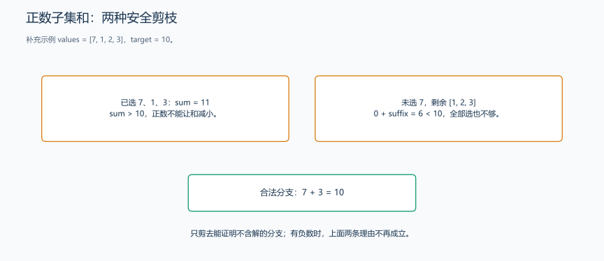
图中所有数都是正数，继续选择只会增大总和。当前总和已经超过目标时，这个分支就可以停止；代码中的判断来自这个实际变化。
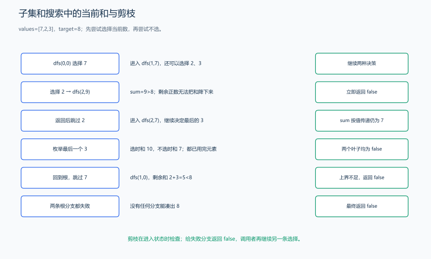
再看 [7,2,3]、target=8：先选 7，再选 2 得到 9，已经超过目标，立即返回 false；回到上一层，改为不选 2，后续选 3 得到 10，不选则只得 7，两边都失败。最终退回根，不选 7 时，剩余总和只有 5，小于 8，可整枝删除。图中的返回恢复到父调用的局部 sum，而 suffix 始终只读；没有共享选择数组就不需要额外撤销。
先定义搜索状态，再证明删除分支安全。 dfs(i,sum) 表示前 i 个位置的选择已确定，当前和为 sum，接下来只决定 i…n-1。对位置 i 分成选择与不选择两条分支，覆盖所有合法子集；下一层 i+1 保证一个位置最多使用一次。
由于所有元素为正，继续选择只能让和变大，因此 sum>target 后无论怎样选择都不可能回到目标。另一方面，把剩余全选上也只能达到 sum+suffix[i]；若这个上界还小于目标，所有后续子集都无解。两个判断分别排除“已经太大”和“最多仍不够”。
例如 [2,3,7]、目标 5：选 2 后再选 3 立即成功；若目标是 6，选择 7 的相关分支会超过目标，跳过 7 后剩余可达到的和又不足，最终失败。目标为 0 时空集就成功，所以检查 sum==target 要在结束与剪枝判断之前。
这里 sum 按值传递，两条分支各用自己的值，无需手工减回去。如果改为共享路径数组并 push_back，返回上一层之前要对应 pop_back，否则会把前一分支的选择带进后一分支。
#include <functional>
#include <vector>
using namespace std;
bool subsetSumPruned(const vector<int> &values, long long target) {
int n = static_cast<int>(values.size());
vector<long long> suffix(n + 1, 0);
for (int i = n - 1; i >= 0; --i) {
suffix[i] = suffix[i + 1] + values[i];
}
function<bool(int, long long)> dfs = [&](int i, long long sum) {
if (sum == target) {
return true;
}
// 当前和已超目标，或加上所有剩余正数仍不够时，结束这条分支。
if (i == n || sum > target || sum + suffix[i] < target) {
return false;
}
return dfs(i + 1, sum + values[i]) || dfs(i + 1, sum);
};
return dfs(0, 0);
}样例： [2, 3, 7]、目标 5 返回 true；目标 6 返回 false；目标 0 返回 true。
代码解释： suffix[i] 是从 i 开始所有剩余元素的和，构成可达到的和的上界。存在负数时，以上两个剪枝条件不再直接成立。
最坏仍需 \(O(2^n)\) 时间，额外空间 \(O(n)\)；剪枝改善实际搜索量，并不自动改变最坏复杂度。
练习题： 洛谷 P1036 — 选数、洛谷 P1049 — 装箱问题（也可用 DP，比较两种思路）。
6. 记忆化搜索：把重复递归变成状态计算
记忆化搜索保留递归的表达方式，同时缓存同一状态的答案。普通 visited 只说明“是否访问过”，memo 还回答“这个状态的计算结果是什么”；如果后续需要这个结果，不能只因访问过就返回 0。
题目原文（自拟）： 有一个 rows×columns 的网格，1<=rows,columns<=500，只能向右或向下移动，不能越界。部分格子是障碍。求从左上角 (0,0) 到右下角 (rows-1,columns-1) 的合法路径数量，对 1000000007 取模。函数输入是等长行组成的 vector<vector<bool>> blocked，true 表示障碍；返回一个整数。起点或终点为障碍时返回 0；只有一个可走格子时，不移动计为一条路径。
先拆最后一步： 令 F(r,c) 表示到达格子 (r,c) 的路径数。普通格的最后一步只能来自 (r-1,c) 或 (r,c-1)，两类最后一步不同、不重复且覆盖全部路径，所以

先看无障碍 2×3 的全部路径 RRD、RDR、DRR。第一条最后向下，删去这一步只剩到 (0,2) 的 RR；后两条最后向右，删去它们的末步得到到 (1,1) 的 RD、DR。每个前驱接回指定末步恰好还原一条路径，两类没有重叠，所以数量是 1+2=3。把终点推广为 (r,c)，就得到下面的方程。
\[F(r,c)=\bigl(F(r-1,c)+F(r,c-1)\bigr)\bmod M.\]
越界或障碍返回 0；可走起点返回 1。先判断障碍，再判断起点，避免封住的起点得到一个虚构方案。
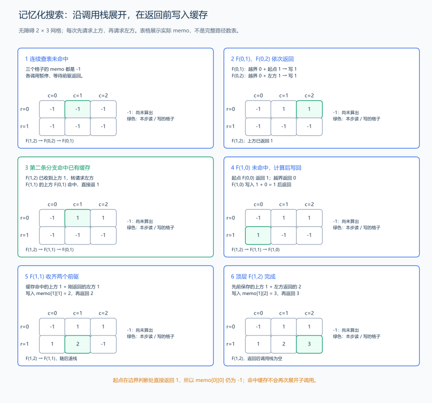
把递归分成四个动作：查表 → 请求前驱 → 合并 → 写回并返回。查到 -1 时，当前调用暂停并进入前驱调用；前驱返回后，当前调用从暂停的位置继续。查到合法答案则立即返回，不再展开。
图用无障碍 2×3 网格演示实际执行顺序，缓存中起点仍为 -1，因为代码遇到起点时直接返回 1，没有写入起点的缓存。它与“到每格的完整路径数表”含义不同。
| 执行阶段 | 当前动作与返回值 | 缓存变化 |
|---|---|---|
| 1 | F(1,2) 未命中，暂停并调用上方 F(0,2)；后者也未命中，再调用 F(0,1) |
均为 -1，尚未求出答案 |
| 2 | F(0,1) 的上方越界返回 0，左方起点返回 1 |
写 memo[0][1]=1，再返回 1 |
| 3 | F(0,2) 收到左方的 1，上方越界贡献 0 |
写 memo[0][2]=1，再返回 1 |
| 4 | F(1,2) 把上方返回的 1 存在局部变量 above，继续调用左方 F(1,1) |
F(1,2) 暂未完成，不提前写缓存 |
| 5 | F(1,1) 请求上方 F(0,1)，查到缓存 1，立即返回，不再请求它的前驱 |
命中 memo[0][1] |
| 6 | F(1,1) 再请求左方 F(1,0)；后者的上方起点返回 1、左方越界返回 0 |
写 memo[1][0]=1，再返回 1 |
| 7 | F(1,1) 收到两个 1，合并为 2 |
写 memo[1][1]=2，再返回 2 |
| 8 | F(1,2) 把已保存的上方 1 与左方返回的 2 合并 |
写 memo[1][2]=3，再返回 3 |
两个前驱返回后，把它们的路径数相加，再写入当前格子的缓存。后面的分支到达这个格子时，读取的就是完整答案。回溯撤销一次选择，记忆化则保留固定状态的计算结果，因此这里的缓存会一直留着供其他分支复用。
重复为什么出现？ 在无障碍 3×3 网格中，F(2,2) 请求 F(1,2) 和 F(2,1)，这两者都请求 F(1,1)。没有缓存时每个分支都再展开它；有缓存后，同一坐标只计算一次。
什么时候可以缓存？ 未来只受坐标与固定障碍影响，抵达这个状态之前走过的具体路线不影响前驱路径数；若规则禁止重复经过格子并允许四向移动，仅用坐标就不够，因为可用格子取决于此前路线。不能把不同历史压成一个 memo[r][c]。
为什么计算会结束？ 请求上方或左方时，r+c 每次减小一，最后到达起点或走出网格，直接返回已有结果。沿这张依赖图计算，会先完成较小坐标和的状态，再把答案传回当前状态。
#include <functional>
#include <vector>
using namespace std;
int gridPathsMemo(const vector<vector<bool>> &blocked) {
constexpr int mod = 1000000007;
int rows = static_cast<int>(blocked.size());
int columns = static_cast<int>(blocked[0].size());
vector<vector<int>> memo(rows, vector<int>(columns, -1));
function<int(int, int)> dfs = [&](int row, int column) -> int {
if (row < 0 || column < 0 || blocked[row][column]) {
return 0; // 越界或障碍，不产生路径。
}
if (row == 0 && column == 0) {
return 1;
}
int &answer = memo[row][column];
if (answer != -1) {
return answer; // 包括答案为 0 的状态，也不重复计算。
}
// 分开调用：先算上方，再算左方，与过程图的展开顺序一致。
int above = dfs(row - 1, column);
int left = dfs(row, column - 1);
answer = static_cast<int>((1LL * above + left) % mod); // 收齐后才写回缓存。
return answer;
};
return dfs(rows - 1, columns - 1);
}手算样例： 无障碍 2×3 网格的表为 [[1,1,1],[1,2,3]]，返回 3；若 (0,1) 被封住，表为 [[1,0,0],[1,1,1]]，返回 1。-1 表示尚未计算，合法答案范围为 0…M-1；某格算出 0 后也写入缓存：-1 表示未计算，0 表示已经算出没有路径，两种状态由不同数值区分。
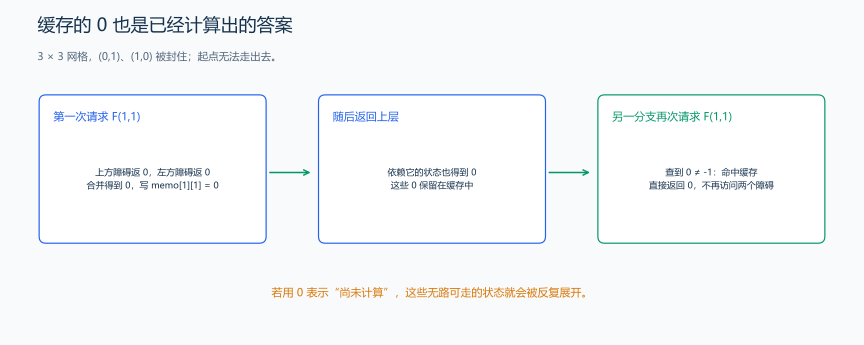
再看 3×3 网格，封住 (0,1) 和 (1,0)。第一次计算 F(1,1) 时，两个前驱都为 0，所以把 memo[1][1] 写成 0。后面的分支再次请求它，条件 answer!=-1 成立，直接返回 0。这就是“已经算过，结果为零”，并非“没有算过”。
代码与复杂度： int &answer 引用缓存格，写入后后续调用直接读它。最多 rows×columns 个状态，每状态两条转移；缓存初始化与总计算时间均为 \(O(rows\times columns)\)，缓存空间相同，递归深度为 \(O(rows+columns)\)。很长的网格应改用接下来的迭代 DP。
练习题： 洛谷 P1002 — 过河卒（需把马及其控制范围标成障碍，并按题意处理精确计数）、洛谷 P1434 — 滑雪（高度严格下降使依赖无环）。
记忆化按需请求状态，DP 按依赖顺序计算状态。下面紧接动态规划章节，用同样的状态定义比较两种求解顺序。